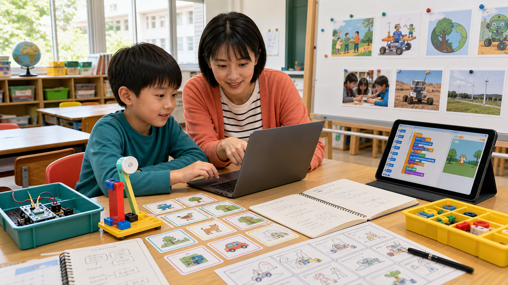

115 學年度 · 黃凱揚老師 · 20 節
石門智繪客
以一位三年級創造能力資優學生為核心，從生活中的 AI 出發，逐步完成資料思考、Scratch 互動、負責任使用 AI、原型測試與成果發表。
10 次雙節課每 3 週一次每次 90 分鐘一學年一件完整作品

115 學年度 · 黃凱揚老師 · 20 節
以一位三年級創造能力資優學生為核心，從生活中的 AI 出發，逐步完成資料思考、Scratch 互動、負責任使用 AI、原型測試與成果發表。
